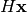
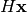
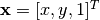
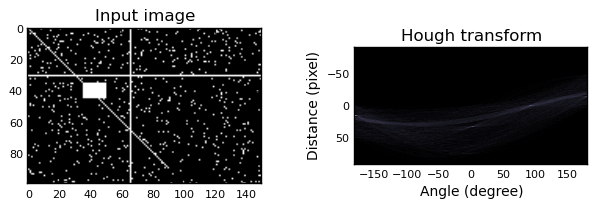

Module: transform¶
AffineTransform¶
- class skimage.transform.AffineTransform(matrix=None, scale=None, rotation=None, shear=None, translation=None)¶
Bases: skimage.transform._geometric.ProjectiveTransform
2D affine transformation of the form:
X = a0*x + a1*y + a2 = = sx*x*cos(rotation) - sy*y*sin(rotation + shear) + a2 Y = b0*x + b1*y + b2 = = sx*x*sin(rotation) + sy*y*cos(rotation + shear) + b2
where sx and sy are zoom factors in the x and y directions, and the homogeneous transformation matrix is:
[[a0 a1 a2] [b0 b1 b2] [0 0 1]]
Parameters : matrix : (3, 3) array, optional
Homogeneous transformation matrix.
scale : (sx, sy) as array, list or tuple, optional
Scale factors.
rotation : float, optional
Rotation angle in counter-clockwise direction as radians.
shear : float, optional
Shear angle in counter-clockwise direction as radians.
translation : (tx, ty) as array, list or tuple, optional
Translation parameters.
- __init__(matrix=None, scale=None, rotation=None, shear=None, translation=None)¶
- rotation¶
- scale¶
- shear¶
- translation¶
PiecewiseAffineTransform¶
- class skimage.transform.PiecewiseAffineTransform¶
Bases: skimage.transform._geometric.ProjectiveTransform
2D piecewise affine transformation.
Control points are used to define the mapping. The transform is based on a Delaunay triangulation of the points to form a mesh. Each triangle is used to find a local affine transform.
- __init__()¶
- estimate(src, dst)¶
Set the control points with which to perform the piecewise mapping.
Number of source and destination coordinates must match.
Parameters : src : (N, 2) array
Source coordinates.
dst : (N, 2) array
Destination coordinates.
- inverse(coords)¶
Apply inverse transformation.
Coordinates outside of the mesh will be set to - 1.
Parameters : coords : (N, 2) array
Source coordinates.
Returns : coords : (N, 2) array
Transformed coordinates.
PolynomialTransform¶
- class skimage.transform.PolynomialTransform(params=None)¶
Bases: skimage.transform._geometric.GeometricTransform
2D transformation of the form:
X = sum[j=0:order]( sum[i=0:j]( a_ji * x**(j - i) * y**i )) Y = sum[j=0:order]( sum[i=0:j]( b_ji * x**(j - i) * y**i ))
Parameters : params : (2, N) array, optional
Polynomial coefficients where N * 2 = (order + 1) * (order + 2). So, a_ji is defined in params[0, :] and b_ji in params[1, :].
- __init__(params=None)¶
- estimate(src, dst, order)¶
Set the transformation matrix with the explicit transformation parameters.
You can determine the over-, well- and under-determined parameters with the total least-squares method.
Number of source and destination coordinates must match.
The transformation is defined as:
X = sum[j=0:order]( sum[i=0:j]( a_ji * x**(j - i) * y**i )) Y = sum[j=0:order]( sum[i=0:j]( b_ji * x**(j - i) * y**i ))
These equations can be transformed to the following form:
0 = sum[j=0:order]( sum[i=0:j]( a_ji * x**(j - i) * y**i )) - X 0 = sum[j=0:order]( sum[i=0:j]( b_ji * x**(j - i) * y**i )) - Y
which exist for each set of corresponding points, so we have a set of N * 2 equations. The coefficients appear linearly so we can write A x = 0, where:
A = [[1 x y x**2 x*y y**2 ... 0 ... 0 -X] [0 ... 0 1 x y x**2 x*y y**2 -Y] ... ... ] x.T = [a00 a10 a11 a20 a21 a22 ... ann b00 b10 b11 b20 b21 b22 ... bnn c3]In case of total least-squares the solution of this homogeneous system of equations is the right singular vector of A which corresponds to the smallest singular value normed by the coefficient c3.
Parameters : src : (N, 2) array
Source coordinates.
dst : (N, 2) array
Destination coordinates.
order : int
Polynomial order (number of coefficients is order + 1).
- inverse(coords)¶
ProjectiveTransform¶
- class skimage.transform.ProjectiveTransform(matrix=None)¶
Bases: skimage.transform._geometric.GeometricTransform
Matrix transformation.
Apply a projective transformation (homography) on coordinates.
For each homogeneous coordinate
![\mathbf{x} = [x, y, 1]^T](../_images/math/8800e6ed331cf15ba182031609babfac06216a77.png) , its
target position is calculated by multiplying with the given matrix,
, its
target position is calculated by multiplying with the given matrix,
 , to give :
, to give :[[a0 a1 a2] [b0 b1 b2] [c0 c1 1 ]].
E.g., to rotate by theta degrees clockwise, the matrix should be:
[[cos(theta) -sin(theta) 0] [sin(theta) cos(theta) 0] [0 0 1]]
or, to translate x by 10 and y by 20:
[[1 0 10] [0 1 20] [0 0 1 ]].
Parameters : matrix : (3, 3) array, optional
Homogeneous transformation matrix.
- __init__(matrix=None)¶
- estimate(src, dst)¶
Set the transformation matrix with the explicit transformation parameters.
You can determine the over-, well- and under-determined parameters with the total least-squares method.
Number of source and destination coordinates must match.
The transformation is defined as:
X = (a0*x + a1*y + a2) / (c0*x + c1*y + 1) Y = (b0*x + b1*y + b2) / (c0*x + c1*y + 1)
These equations can be transformed to the following form:
0 = a0*x + a1*y + a2 - c0*x*X - c1*y*X - X 0 = b0*x + b1*y + b2 - c0*x*Y - c1*y*Y - Y
which exist for each set of corresponding points, so we have a set of N * 2 equations. The coefficients appear linearly so we can write A x = 0, where:
A = [[x y 1 0 0 0 -x*X -y*X -X] [0 0 0 x y 1 -x*Y -y*Y -Y] ... ... ] x.T = [a0 a1 a2 b0 b1 b2 c0 c1 c3]In case of total least-squares the solution of this homogeneous system of equations is the right singular vector of A which corresponds to the smallest singular value normed by the coefficient c3.
In case of the affine transformation the coefficients c0 and c1 are 0. Thus the system of equations is:
A = [[x y 1 0 0 0 -X] [0 0 0 x y 1 -Y] ... ... ] x.T = [a0 a1 a2 b0 b1 b2 c3]Parameters : src : (N, 2) array
Source coordinates.
dst : (N, 2) array
Destination coordinates.
- inverse(coords)¶
Apply inverse transformation.
Parameters : coords : (N, 2) array
Source coordinates.
Returns : coords : (N, 2) array
Transformed coordinates.
SimilarityTransform¶
- class skimage.transform.SimilarityTransform(matrix=None, scale=None, rotation=None, translation=None)¶
Bases: skimage.transform._geometric.ProjectiveTransform
2D similarity transformation of the form:
X = a0*x - b0*y + a1 = = m*x*cos(rotation) + m*y*sin(rotation) + a1 Y = b0*x + a0*y + b1 = = m*x*sin(rotation) + m*y*cos(rotation) + b1
where m is a zoom factor and the homogeneous transformation matrix is:
[[a0 b0 a1] [b0 a0 b1] [0 0 1]]
Parameters : matrix : (3, 3) array, optional
Homogeneous transformation matrix.
scale : float, optional
Scale factor.
rotation : float, optional
Rotation angle in counter-clockwise direction as radians.
translation : (tx, ty) as array, list or tuple, optional
x, y translation parameters.
- __init__(matrix=None, scale=None, rotation=None, translation=None)¶
- estimate(src, dst)¶
Set the transformation matrix with the explicit parameters.
You can determine the over-, well- and under-determined parameters with the total least-squares method.
Number of source and destination coordinates must match.
The transformation is defined as:
X = a0*x - b0*y + a1 Y = b0*x + a0*y + b1
These equations can be transformed to the following form:
0 = a0*x - b0*y + a1 - X 0 = b0*x + a0*y + b1 - Y
which exist for each set of corresponding points, so we have a set of N * 2 equations. The coefficients appear linearly so we can write A x = 0, where:
A = [[x 1 -y 0 -X] [y 0 x 1 -Y] ... ... ] x.T = [a0 a1 b0 b1 c3]In case of total least-squares the solution of this homogeneous system of equations is the right singular vector of A which corresponds to the smallest singular value normed by the coefficient c3.
Parameters : src : (N, 2) array
Source coordinates.
dst : (N, 2) array
Destination coordinates.
- rotation¶
- scale¶
- translation¶
| skimage.transform.estimate_transform(ttype, ...) | Estimate 2D geometric transformation parameters. |
| skimage.transform.frt2(a) | Compute the 2-dimensional finite radon transform (FRT) for an n x n |
| skimage.transform.homography(image, H[, ...]) | Note Deprecated in skimage 0.7 |
| skimage.transform.hough(img[, theta]) | Perform a straight line Hough transform. |
| skimage.transform.ifrt2(a) | Compute the 2-dimensional inverse finite radon transform (iFRT) for |
| skimage.transform.integral_image(x) | Integral image / summed area table. |
| skimage.transform.integrate(ii, r0, c0, r1, c1) | Use an integral image to integrate over a given window. |
| skimage.transform.iradon(radon_image[, ...]) | Inverse radon transform. |
| skimage.transform.probabilistic_hough(img[, ...]) | Return lines from a progressive probabilistic line Hough transform. |
| skimage.transform.pyramid_expand(image[, ...]) | Upsample and then smooth image. |
| skimage.transform.pyramid_gaussian(image[, ...]) | Yield images of the gaussian pyramid formed by the input image. |
| skimage.transform.pyramid_laplacian(image[, ...]) | Yield images of the laplacian pyramid formed by the input image. |
| skimage.transform.pyramid_reduce(image[, ...]) | Smooth and then downsample image. |
| skimage.transform.radon(image[, theta]) | Calculates the radon transform of an image given specified projection angles. |
| skimage.transform.resize(image, output_shape) | Resize image. |
| skimage.transform.rotate(image, angle[, ...]) | Rotate image by a certain angle around its center. |
| skimage.transform.swirl(image[, center, ...]) | Perform a swirl transformation. |
| skimage.transform.warp(image[, inverse_map, ...]) | Warp an image according to a given coordinate transformation. |
| skimage.transform.warp_coords(coord_map, shape) | Build the source coordinates for the output pixels of an image warp. |
estimate_transform¶
- skimage.transform.estimate_transform(ttype, src, dst, **kwargs)¶
Estimate 2D geometric transformation parameters.
You can determine the over-, well- and under-determined parameters with the total least-squares method.
Number of source and destination coordinates must match.
Parameters : ttype : {‘similarity’, ‘affine’, ‘piecewise-affine’, ‘projective’, ‘polynomial’}
Type of transform.
kwargs : array or int
Function parameters (src, dst, n, angle):
NAME / TTYPE FUNCTION PARAMETERS 'similarity' `src, `dst` 'affine' `src, `dst` 'piecewise-affine' `src, `dst` 'projective' `src, `dst` 'polynomial' `src, `dst`, `order` (polynomial order)
Also see examples below.
Returns : tform : GeometricTransform
Transform object containing the transformation parameters and providing access to forward and inverse transformation functions.
Examples
>>> import numpy as np >>> from skimage import transform as tf
>>> # estimate transformation parameters >>> src = np.array([0, 0, 10, 10]).reshape((2, 2)) >>> dst = np.array([12, 14, 1, -20]).reshape((2, 2))
>>> tform = tf.estimate_transform('similarity', src, dst)
>>> tform.inverse(tform(src)) # == src
>>> # warp image using the estimated transformation >>> from skimage import data >>> image = data.camera()
>>> warp(image, inverse_map=tform.inverse)
>>> # create transformation with explicit parameters >>> tform2 = tf.SimilarityTransform(scale=1.1, rotation=1, ... translation=(10, 20))
>>> # unite transformations, applied in order from left to right >>> tform3 = tform + tform2 >>> tform3(src) # == tform2(tform(src))
frt2¶
- skimage.transform.frt2(a)¶
Compute the 2-dimensional finite radon transform (FRT) for an n x n integer array.
Parameters : a : array_like
A 2-D square n x n integer array.
Returns : FRT : 2-D ndarray
Finite Radon Transform array of (n+1) x n integer coefficients.
See also
- ifrt2
- The two-dimensional inverse FRT.
Notes
The FRT has a unique inverse iff n is prime. [FRT] The idea for this algorithm is due to Vlad Negnevitski.
References
[FRT] A. Kingston and I. Svalbe, “Projective transforms on periodic discrete image arrays,” in P. Hawkes (Ed), Advances in Imaging and Electron Physics, 139 (2006) Examples
Generate a test image: Use a prime number for the array dimensions
>>> SIZE = 59 >>> img = np.tri(SIZE, dtype=np.int32)
Apply the Finite Radon Transform:
>>> f = frt2(img)
homography¶
- skimage.transform.homography(image, H, output_shape=None, order=1, mode='constant', cval=0.0)¶
Note
Deprecated in skimage 0.7 homography will be removed in skimage 0.8, it is replaced by warp because the latter provides the same functionality:
warp(image, ProjectiveTransform(H))
Perform a projective transformation (homography) on an image.
For each pixel, given its homogeneous coordinate , its target position is calculated by multiplying with the given matrix,
, to give .
E.g., to rotate by theta degrees clockwise, the matrix should be[[cos(theta) -sin(theta) 0] [sin(theta) cos(theta) 0] [0 0 1]]
or, to translate x by 10 and y by 20,
[[1 0 10] [0 1 20] [0 0 1 ]].
Parameters : image : 2-D array
Input image.
H : array of shape (3, 3)
Transformation matrix H that defines the homography.
output_shape : tuple (rows, cols)
Shape of the output image generated.
order : int
Order of splines used in interpolation.
mode : string
How to handle values outside the image borders. Passed as-is to ndimage.
cval : string
Used in conjunction with mode ‘constant’, the value outside the image boundaries.
Examples
>>> # rotate by 90 degrees around origin and shift down by 2 >>> x = np.arange(9, dtype=np.uint8).reshape((3, 3)) + 1 >>> x array([[1, 2, 3], [4, 5, 6], [7, 8, 9]], dtype=uint8) >>> theta = -np.pi/2 >>> M = np.array([[np.cos(theta),-np.sin(theta),0], ... [np.sin(theta), np.cos(theta),2], ... [0, 0, 1]]) >>> x90 = homography(x, M, order=1) >>> x90 array([[3, 6, 9], [2, 5, 8], [1, 4, 7]], dtype=uint8) >>> # translate right by 2 and down by 1 >>> y = np.zeros((5,5), dtype=np.uint8) >>> y[1, 1] = 255 >>> y array([[ 0, 0, 0, 0, 0], [ 0, 255, 0, 0, 0], [ 0, 0, 0, 0, 0], [ 0, 0, 0, 0, 0], [ 0, 0, 0, 0, 0]], dtype=uint8) >>> M = np.array([[ 1., 0., 2.], ... [ 0., 1., 1.], ... [ 0., 0., 1.]]) >>> y21 = homography(y, M, order=1) >>> y21 array([[ 0, 0, 0, 0, 0], [ 0, 0, 0, 0, 0], [ 0, 0, 0, 255, 0], [ 0, 0, 0, 0, 0], [ 0, 0, 0, 0, 0]], dtype=uint8)
hough¶
- skimage.transform.hough(img, theta=None)¶
Perform a straight line Hough transform.
Parameters : img : (M, N) ndarray
Input image with nonzero values representing edges.
theta : 1D ndarray of double
Angles at which to compute the transform, in radians. Defaults to -pi/2 .. pi/2
Returns : H : 2-D ndarray of uint64
Hough transform accumulator.
distances : ndarray
Distance values.
theta : ndarray
Angles at which the transform was computed.
Examples
Generate a test image:
>>> img = np.zeros((100, 150), dtype=bool) >>> img[30, :] = 1 >>> img[:, 65] = 1 >>> img[35:45, 35:50] = 1 >>> for i in range(90): ... img[i, i] = 1 >>> img += np.random.random(img.shape) > 0.95
Apply the Hough transform:
>>> out, angles, d = hough(img)
import numpy as np import matplotlib.pyplot as plt from skimage.transform import hough img = np.zeros((100, 150), dtype=bool) img[30, :] = 1 img[:, 65] = 1 img[35:45, 35:50] = 1 for i in range(90): img[i, i] = 1 img += np.random.random(img.shape) > 0.95 out, angles, d = hough(img) plt.subplot(1, 2, 1) plt.imshow(img, cmap=plt.cm.gray) plt.title('Input image') plt.subplot(1, 2, 2) plt.imshow(out, cmap=plt.cm.bone, extent=(d[0], d[-1], np.rad2deg(angles[0]), np.rad2deg(angles[-1]))) plt.title('Hough transform') plt.xlabel('Angle (degree)') plt.ylabel('Distance (pixel)') plt.subplots_adjust(wspace=0.4) plt.show()
(Source code, png)

{kind=link}
ifrt2¶
- skimage.transform.ifrt2(a)¶
Compute the 2-dimensional inverse finite radon transform (iFRT) for an (n+1) x n integer array.
Parameters : a : array_like
A 2-D (n+1) row x n column integer array.
Returns : iFRT : 2-D n x n ndarray
Inverse Finite Radon Transform array of n x n integer coefficients.
See also
- frt2
- The two-dimensional FRT
Notes
The FRT has a unique inverse iff n is prime. See [R152] for an overview. The idea for this algorithm is due to Vlad Negnevitski.
References
[R152] (1, 2) A. Kingston and I. Svalbe, “Projective transforms on periodic discrete image arrays,” in P. Hawkes (Ed), Advances in Imaging and Electron Physics, 139 (2006) Examples
>>> SIZE = 59 >>> img = np.tri(SIZE, dtype=np.int32)
Apply the Finite Radon Transform:
>>> f = frt2(img)
Apply the Inverse Finite Radon Transform to recover the input
>>> fi = ifrt2(f)
Check that it’s identical to the original
>>> assert len(np.nonzero(img-fi)[0]) == 0
integral_image¶
- skimage.transform.integral_image(x)¶
Integral image / summed area table.
The integral image contains the sum of all elements above and to the left of it, i.e.:
![S[m, n] = \sum_{i \leq m} \sum_{j \leq n} X[i, j]](../_images/math/60eb18acdabe921f0fcbc69cf1dfc9fe4934bb1d.png)
Parameters : x : ndarray
Input image.
Returns : S : ndarray
Integral image / summed area table.
References
[R153] F.C. Crow, “Summed-area tables for texture mapping,” ACM SIGGRAPH Computer Graphics, vol. 18, 1984, pp. 207-212.
integrate¶
- skimage.transform.integrate(ii, r0, c0, r1, c1)¶
Use an integral image to integrate over a given window.
Parameters : ii : ndarray
Integral image.
r0, c0 : int
Top-left corner of block to be summed.
r1, c1 : int
Bottom-right corner of block to be summed.
Returns : S : int
Integral (sum) over the given window.
iradon¶
- skimage.transform.iradon(radon_image, theta=None, output_size=None, filter='ramp', interpolation='linear')¶
Inverse radon transform.
Reconstruct an image from the radon transform, using the filtered back projection algorithm.
Parameters : radon_image : array_like, dtype=float
Image containing radon transform (sinogram). Each column of the image corresponds to a projection along a different angle.
theta : array_like, dtype=float, optional
Reconstruction angles (in degrees). Default: m angles evenly spaced between 0 and 180 (if the shape of radon_image is (N, M)).
output_size : int
Number of rows and columns in the reconstruction.
filter : str, optional (default ramp)
Filter used in frequency domain filtering. Ramp filter used by default. Filters available: ramp, shepp-logan, cosine, hamming, hann Assign None to use no filter.
interpolation : str, optional (default linear)
Interpolation method used in reconstruction. Methods available: nearest, linear.
Returns : output : ndarray
Reconstructed image.
Notes
It applies the fourier slice theorem to reconstruct an image by multiplying the frequency domain of the filter with the FFT of the projection data. This algorithm is called filtered back projection.
probabilistic_hough¶
- skimage.transform.probabilistic_hough(img, threshold=10, line_length=50, line_gap=10, theta=None)¶
Return lines from a progressive probabilistic line Hough transform.
Parameters : img : (M, N) ndarray
Input image with nonzero values representing edges.
threshold : int
Threshold
line_length : int, optional (default 50)
Minimum accepted length of detected lines. Increase the parameter to extract longer lines.
line_gap : int, optional, (default 10)
Maximum gap between pixels to still form a line. Increase the parameter to merge broken lines more aggresively.
theta : 1D ndarray, dtype=double, optional, default (-pi/2 .. pi/2)
Angles at which to compute the transform, in radians.
Returns : lines : list
List of lines identified, lines in format ((x0, y0), (x1, y0)), indicating line start and end.
References
[R154] C. Galamhos, J. Matas and J. Kittler, “Progressive probabilistic Hough transform for line detection”, in IEEE Computer Society Conference on Computer Vision and Pattern Recognition, 1999.
pyramid_expand¶
- skimage.transform.pyramid_expand(image, upscale=2, sigma=None, order=1, mode='reflect', cval=0)¶
Upsample and then smooth image.
Parameters : image : array
Input image.
upscale : float, optional
Upscale factor.
sigma : float, optional
Sigma for gaussian filter. Default is 2 * upscale / 6.0 which corresponds to a filter mask twice the size of the scale factor that covers more than 99% of the gaussian distribution.
order : int, optional
Order of splines used in interpolation of upsampling. See scipy.ndimage.map_coordinates for detail.
mode : {‘reflect’, ‘constant’, ‘nearest’, ‘mirror’, ‘wrap’}, optional
The mode parameter determines how the array borders are handled, where cval is the value when mode is equal to ‘constant’.
cval : float, optional
Value to fill past edges of input if mode is ‘constant’.
Returns : out : array
Upsampled and smoothed float image.
References
..[1] http://web.mit.edu/persci/people/adelson/pub_pdfs/pyramid83.pdf
pyramid_gaussian¶
- skimage.transform.pyramid_gaussian(image, max_layer=-1, downscale=2, sigma=None, order=1, mode='reflect', cval=0)¶
Yield images of the gaussian pyramid formed by the input image.
Recursively applies the pyramid_reduce function to the image, and yields the downscaled images.
Note that the first image of the pyramid will be the original, unscaled image. The total number of images is max_layer + 1. In case all layers are computed, the last image is either a one-pixel image or the image where the reduction does not change its shape.
Parameters : image : array
Input image.
max_layer : int
Number of layers for the pyramid. 0th layer is the original image. Default is -1 which builds all possible layers.
downscale : float, optional
Downscale factor.
sigma : float, optional
Sigma for gaussian filter. Default is 2 * downscale / 6.0 which corresponds to a filter mask twice the size of the scale factor that covers more than 99% of the gaussian distribution.
order : int, optional
Order of splines used in interpolation of downsampling. See scipy.ndimage.map_coordinates for detail.
mode : {‘reflect’, ‘constant’, ‘nearest’, ‘mirror’, ‘wrap’}, optional
The mode parameter determines how the array borders are handled, where cval is the value when mode is equal to ‘constant’.
cval : float, optional
Value to fill past edges of input if mode is ‘constant’.
Returns : pyramid : generator
Generator yielding pyramid layers as float images.
References
..[1] http://web.mit.edu/persci/people/adelson/pub_pdfs/pyramid83.pdf
pyramid_laplacian¶
- skimage.transform.pyramid_laplacian(image, max_layer=-1, downscale=2, sigma=None, order=1, mode='reflect', cval=0)¶
Yield images of the laplacian pyramid formed by the input image.
Each layer contains the difference between the downsampled and the downsampled, smoothed image:
layer = resize(prev_layer) - smooth(resize(prev_layer))
Note that the first image of the pyramid will be the difference between the original, unscaled image and its smoothed version. The total number of images is max_layer + 1. In case all layers are computed, the last image is either a one-pixel image or the image where the reduction does not change its shape.
Parameters : image : array
Input image.
max_layer : int
Number of layers for the pyramid. 0th layer is the original image. Default is -1 which builds all possible layers.
downscale : float, optional
Downscale factor.
sigma : float, optional
Sigma for gaussian filter. Default is 2 * downscale / 6.0 which corresponds to a filter mask twice the size of the scale factor that covers more than 99% of the gaussian distribution.
order : int, optional
Order of splines used in interpolation of downsampling. See scipy.ndimage.map_coordinates for detail.
mode : {‘reflect’, ‘constant’, ‘nearest’, ‘mirror’, ‘wrap’}, optional
The mode parameter determines how the array borders are handled, where cval is the value when mode is equal to ‘constant’.
cval : float, optional
Value to fill past edges of input if mode is ‘constant’.
Returns : pyramid : generator
Generator yielding pyramid layers as float images.
References
..[1] http://web.mit.edu/persci/people/adelson/pub_pdfs/pyramid83.pdf ..[2] http://sepwww.stanford.edu/~morgan/texturematch/paper_html/node3.html
pyramid_reduce¶
- skimage.transform.pyramid_reduce(image, downscale=2, sigma=None, order=1, mode='reflect', cval=0)¶
Smooth and then downsample image.
Parameters : image : array
Input image.
downscale : float, optional
Downscale factor.
sigma : float, optional
Sigma for gaussian filter. Default is 2 * downscale / 6.0 which corresponds to a filter mask twice the size of the scale factor that covers more than 99% of the gaussian distribution.
order : int, optional
Order of splines used in interpolation of downsampling. See scipy.ndimage.map_coordinates for detail.
mode : {‘reflect’, ‘constant’, ‘nearest’, ‘mirror’, ‘wrap’}, optional
The mode parameter determines how the array borders are handled, where cval is the value when mode is equal to ‘constant’.
cval : float, optional
Value to fill past edges of input if mode is ‘constant’.
Returns : out : array
Smoothed and downsampled float image.
References
..[1] http://web.mit.edu/persci/people/adelson/pub_pdfs/pyramid83.pdf
radon¶
- skimage.transform.radon(image, theta=None)¶
Calculates the radon transform of an image given specified projection angles.
Parameters : image : array_like, dtype=float
Input image.
theta : array_like, dtype=float, optional (default np.arange(180))
Projection angles (in degrees).
Returns : output : ndarray
Radon transform (sinogram).
resize¶
- skimage.transform.resize(image, output_shape, order=1, mode='constant', cval=0.0)¶
Resize image.
Parameters : image : ndarray
Input image.
output_shape : tuple or ndarray
Size of the generated output image (rows, cols).
Returns : resized : ndarray
Resized version of the input.
rotate¶
- skimage.transform.rotate(image, angle, resize=False, order=1, mode='constant', cval=0.0)¶
Rotate image by a certain angle around its center.
Parameters : image : ndarray
Input image.
angle : float
Rotation angle in degrees in counter-clockwise direction.
resize: bool, optional :
Determine whether the shape of the output image will be automatically calculated, so the complete rotated image exactly fits. Default is False.
Returns : rotated : ndarray
Rotated version of the input.
swirl¶
- skimage.transform.swirl(image, center=None, strength=1, radius=100, rotation=0, output_shape=None, order=1, mode='constant', cval=0)¶
Perform a swirl transformation.
Parameters : image : ndarray
Input image.
center : (x,y) tuple or (2,) ndarray
Center coordinate of transformation.
strength : float
The amount of swirling applied.
radius : float
The extent of the swirl in pixels. The effect dies out rapidly beyond radius.
rotation : float
Additional rotation applied to the image.
Returns : swirled : ndarray
Swirled version of the input.
warp¶
- skimage.transform.warp(image, inverse_map=None, map_args={}, output_shape=None, order=1, mode='constant', cval=0.0, reverse_map=None)¶
Warp an image according to a given coordinate transformation.
Parameters : image : 2-D array
Input image.
inverse_map : transformation object, callable xy = f(xy, **kwargs)
Inverse coordinate map. A function that transforms a (N, 2) array of (x, y) coordinates in the output image into their corresponding coordinates in the source image (e.g. a transformation object or its inverse).
map_args : dict, optional
Keyword arguments passed to inverse_map.
output_shape : tuple (rows, cols)
Shape of the output image generated.
order : int
Order of splines used in interpolation. See scipy.ndimage.map_coordinates for detail.
mode : string
How to handle values outside the image borders. See scipy.ndimage.map_coordinates for detail.
cval : float
Used in conjunction with mode ‘constant’, the value outside the image boundaries.
Examples
Shift an image to the right:
>>> from skimage import data >>> image = data.camera() >>> >>> def shift_right(xy): ... xy[:, 0] -= 10 ... return xy >>> >>> warp(image, shift_right)
warp_coords¶
- skimage.transform.warp_coords(coord_map, shape, dtype=<type 'numpy.float64'>)¶
Build the source coordinates for the output pixels of an image warp.
Parameters : coord_map : callable like GeometricTransform.inverse
Return input coordinates for given output coordinates.
shape : tuple
Shape of output image (rows, cols[, bands]).
dtype : np.dtype or string
dtype for return value (sane choices: float32 or float64).
Returns : coords : (ndim, rows, cols[, bands]) array of dtype dtype
Coordinates for scipy.ndimage.map_coordinates, that will yield an image of shape (orows, ocols, bands) by drawing from source points according to the coord_transform_fn.
Notes
This is a lower-level routine that produces the source coordinates used by warp().
It is provided separately from warp to give additional flexibility to users who would like, for example, to re-use a particular coordinate mapping, to use specific dtypes at various points along the the image-warping process, or to implement different post-processing logic than warp performs after the call to ndimage.map_coordinates.
Examples
Produce a coordinate map that Shifts an image to the right:
>>> from skimage import data >>> from scipy.ndimage import map_coordinates >>> >>> def shift_right(xy): ... xy[:, 0] -= 10 ... return xy >>> >>> image = data.lena().astype(np.float32) >>> coords = warp_coords(shift_right, image.shape) >>> warped_image = map_coordinates(image, coords)